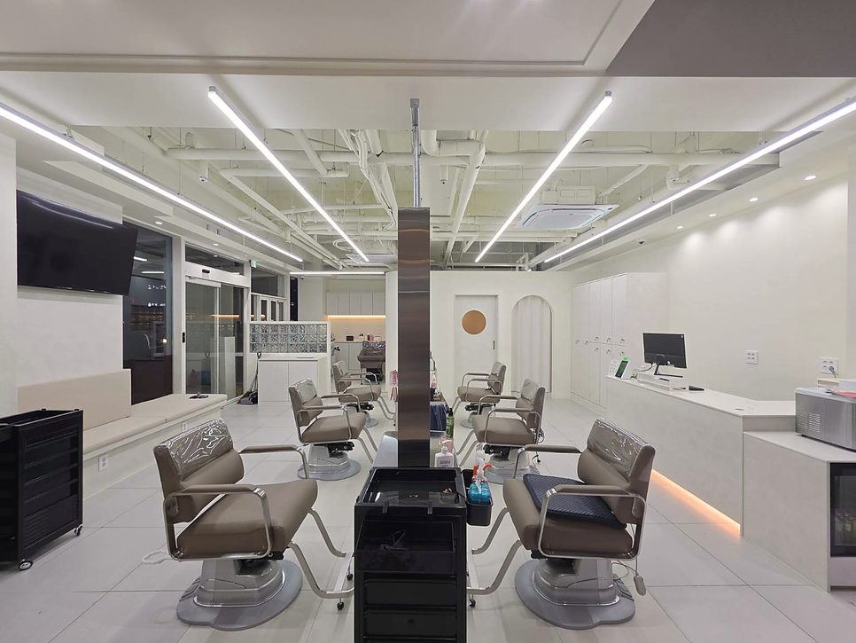

충청남도 당진시
당진
상업공간 인테리어
당진 전 지역 상가, 카페, 음식점, 사무실, 헤어샵 인테리어를 케이디자인 대표가 직접 상담하고 시공합니다. 아래에서 동네를 고르면 해당 지역 안내를 볼 수 있습니다.

상업공간 시공 사례
사진을 누르면 크게 볼 수 있습니다.
백석동 미용실
노출 천장, 라인 조명, 스타일링 존백석동 미용실 스타일링 존
스테인리스 거울, 포세린 타일백석동 미용실 대기 공간
실내 조경, 벽부형 열처리기카페
라인 조명, 샹들리에헤어·뷰티샵
원형 거울, 원목 카운터필라테스 스튜디오
곡선 유리 파티션한식당
간접조명 진열장헤어살롱 스타일링 존
라인 조명, 스타일링 의자상담 라운지
원목 카운터, 아치 창당진 상업공간 인테리어, 케이디자인에 맡기면
당진은 시청 주변 시내 지역과 송악읍·합덕읍 같은 읍 지역으로 나뉘며, 아파트와 단독주택, 상가가 고루 있는 도시입니다.
당진 상권의 매장은 주변 가게와 달라 보이는 것이 중요합니다. 업종과 고객층에 맞춰 외관과 조명 콘셉트를 정합니다.
당진의 독립 상가는 건물 외관까지 손볼 수 있는 경우가 많습니다. 간판과 출입구, 외벽을 실내와 같은 톤으로 맞춰 드립니다.
- 대표 직접 상담전화를 받은 사람이 현장에 나가고, 공사 마무리까지 확인합니다.
- 항목별 견적총액만 적은 견적이 아니라 공정마다 금액을 나눠 드립니다.
- 공정 공유공정이 끝날 때마다 사진과 함께 다음 일정을 알려드립니다.
- 한 팀이 끝까지디자인 따로, 시공 따로 맡기지 않아도 됩니다.
- 가까운 시공 지역멀리서 오는 업체가 아니라 당진 인근에서 일하는 업체입니다.
당진 상업공간 인테리어 준비 안내
상담 전에 알아 두시면 좋은 내용입니다.
업종에 맞는 설비부터 확인
업종마다 필요한 설비가 다릅니다. 당진 매장 실측 때 전기 증설이 필요한지, 배관을 옮겨야 하는지 먼저 살펴보고 견적에 반영합니다.
손님 동선과 좌석 배치
좌석을 많이 넣는 것보다 손님과 직원이 부딪히지 않는 배치가 중요합니다. 평면을 그릴 때 두 동선을 함께 검토합니다.
조명으로 분위기 만들기
사진이 잘 나오는 매장은 대부분 조명이 좋습니다. 간접조명과 포인트 조명을 나눠 배치해 손님이 머무는 자리를 돋보이게 합니다.
외관과 간판까지 한 톤으로
외관 리모델링만 따로 맡기셔도 됩니다. 외벽 색과 출입구, 데크를 정리하면 같은 매장도 새로 연 것처럼 보입니다.
오픈 날짜에서 거꾸로 일정 잡기
임대료가 나가는 기간을 줄이려면 공사 기간이 짧아야 합니다. 공정이 겹칠 수 있는 부분을 찾아 일정을 줄이는 방법을 제안합니다.
관리하기 쉬운 마감재
보기 좋은 마감재와 관리하기 쉬운 마감재는 다를 때가 많습니다. 두 가지를 놓고 장단점을 비교해 고르실 수 있게 합니다.
건물 공사 규정 확인
건물에 따라 간판 크기나 외벽 공사가 제한되기도 합니다. 착공 전에 확인해 두면 공사 중간에 계획이 바뀌지 않습니다.
소방·안전 기준 검토
영업 신고나 허가가 필요한 업종은 소방·안전 기준을 미리 확인해야 합니다. 설계 단계에서 필요한 설비를 반영합니다.
당진 인테리어 진행 과정
첫 통화부터 완공 후 점검까지 같은 사람이 끝까지 챙깁니다.
전화 상담
참고 사진이 있으면 함께 보내 주세요.
현장 실측
현장 치수와 배관·전기 위치를 확인합니다.
디자인과 견적
예산에 맞춰 조정할 항목을 함께 정합니다.
시공
공정이 바뀔 때마다 사진으로 알려드립니다.
완공과 점검
완공 후 사용하며 불편한 점도 다시 살핍니다.
자주 묻는 질문
당진 상가 인테리어도 시공하나요?
네. 당진 상가, 카페, 음식점, 사무실 등 상업공간 인테리어를 설계부터 시공까지 진행합니다.
당진 매장 인테리어 견적은 어떻게 받나요?
전화(010-6852-0300)로 업종, 평수, 희망 일정을 알려주시면 당진 현장을 방문해 실측한 뒤 디자인과 항목별 견적을 안내합니다.
영업 중인 매장도 부분 리모델링이 되나요?
네. 카운터, 조명, 벽체, 외관 등 필요한 부분만 시공하는 것도 상담 가능합니다. 영업 일정에 맞춰 공정을 조율합니다.
어떤 업종의 매장을 시공했나요?
카페, 음식점, 주점, 헤어·뷰티샵, 필라테스 스튜디오, 공방, 상담 라운지, 매장 외관 리모델링 등을 시공했습니다.
- 상호
- 케이디자인
- 대표
- 김명구
- 시공 분야
- 주거공간, 상업공간 인테리어
- 시공 지역
- 충남 천안, 아산, 당진 / 경기 평택